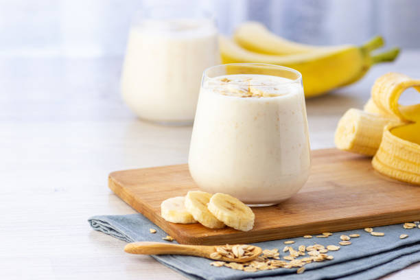

Banana Shake

Ingredients
- Ripend Bananas 6
- Milk one litre
- Honey/Sugar According to your taste
- Dry fruits optional
Method
- Peel all the bananas
- Cut them in small chunks .
- Put them in a mixer grinder. Add milk .
- Run the mixer for two to three minutes.
- Pour the shake into the glasses . On the top add some dry fruits in small pieces